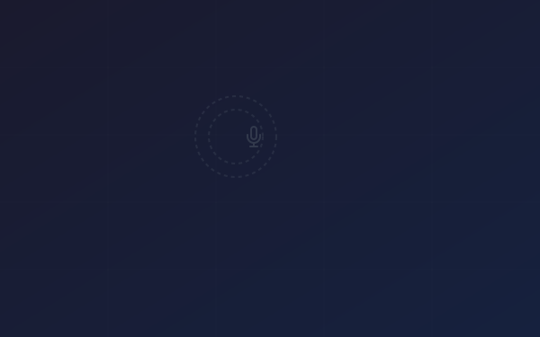

Why Voice Agent Prompts Require a Different Approach
Scripting voice agents requires a different mindset than crafting prompts for text-based LLMs.
Read moreA pixel-perfect reference for all transition designs, hover states, button styles, and visual effects in the Voice Aura design system.
Blog cards lift + image scale on hover. Pricing cards darken border + shadow on hover. Feature link arrows nudge on hover.
Perfect for trying out voice generation with basic customization.
Get Started FreeIdeal for content creators & professionals.
Upgrade to Creator
Scripting voice agents requires a different mindset than crafting prompts for text-based LLMs.
Read moreReusable hover classes: .va-hover-lift, .va-hover-scale, .va-hover-glow, .va-hover-arrow.
Standard easing presets from the design system tokens.
The reference design (behance-05) shows a prominent Voice Aura "app icon" logo centered in the feature visual panel. Demonstrates the light and dark feature panel variants.
Smooth gradient blends between page sections for seamless visual flow. Uses va-section-blend--bottom and background gradient utilities.
.va-bg-white — Pure white.va-bg-alt — Light grey (#F9FAFB).va-bg-dark — Near-black (#1A1919).va-bg-gradient-subtle — White → grey.va-bg-gradient-dark — Dark + blue tint.va-section-blend--top — Top fade.va-section-blend--bottom — Bottom fade.va-section-separator — 1px lineKeyframe-based entrance animations. Applied via .va-animate-* classes. All respect prefers-reduced-motion.
Decorative pattern overlays with CSS custom property control via --va-pattern-opacity.
Input focus transitions use border-color 0.2s + box-shadow 0.2s. Focus ring: 0 0 0 0.2rem rgba(#0478FF, 0.25). Hover darkens border.
The .va-glass utility creates frosted-glass panels. Uses backdrop-filter: blur(12px) with semi-transparent background and subtle border.
Trust bar logos display in grayscale and transition to full color on hover. Uses filter: grayscale(100%) → grayscale(0%) + opacity 0.5 → 1 at 0.3s.